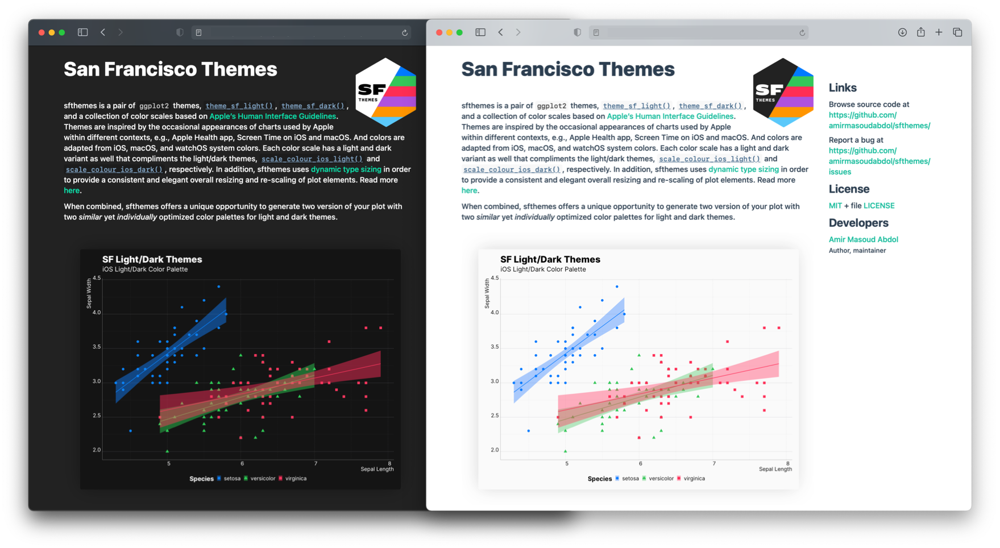
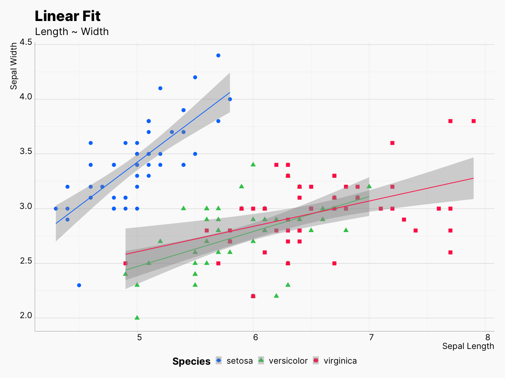
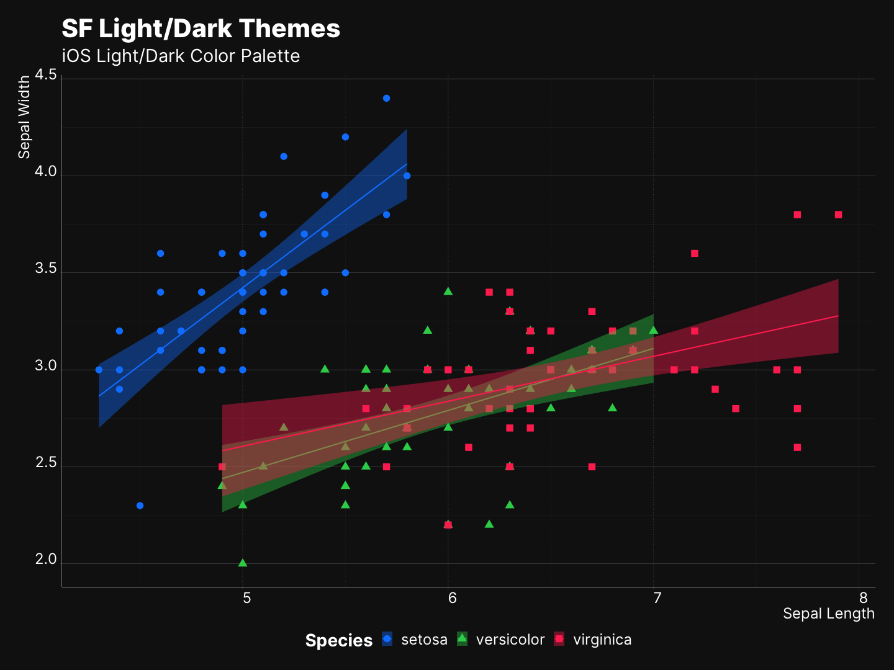

Dynamic Light and Dark Plots in Web
Source:vignettes/dynamic_light_and_dark_plots_in_web.Rmd
dynamic_light_and_dark_plots_in_web.RmdNowadays, most modern web browsers can detect users system preferences and notify a website to deliver an accessible and customized experience to the visitors. Recently, I developed preferably to take advantages of this, and customize pkgdown websites based on user’s preferred system appearances, e.g., light/dark mode. However, background and text colors are not the only elements of a website that should be adjust based on users’ preferences, figures and plots should adapt their appearances as well. Fortunately, it is possible to provide two versions of a same image and inform browsers on when to use one instead of the other. For instance, as you can see below, a light themed plot is used in the light version of the website, and a dark themed plot in the dark version.

While changing the text and background color can be “easily” adjusted using CSS, creating two similar, compatible, and optimized plots for light and dark appearances is not straightforward. You need a set of light/dark theme, and a collection of compatible, and optimized color scales in order to be able to deliver a seamless experience.
Here, I describe how you can achieve this behavior using my custom pkgdown template, preferably, and sfthemes.
Instruction
So, as I mentioned, what we need is two versions of the same plot, each optimized for light and dark appearance, and a method of delivering them based on the user’s system preference.
Creating Light/Dark Plots
As shown here, you can produce two variants of your visualization by using theme_sf_light() and theme_sf_dark() themes, and your selected color scheme in light and dark mode.
library(ggplot2); library(sfthemes)
gp <- ggplot(aes(x = Sepal.Length,
y = Sepal.Width,
color = Species)) +
geom_point(aes(shape = Species)) +
xlab("Sepal Length") + ylab("Sepal Width") +
labs(title = "SF Light/Dark Themes",
subtitle = "iOS Light/Dark Color Palette") +
geom_smooth(method="lm", aes(fill = Species))
# Light
gp + theme_sf_light(size_class = "xxxLarge") +
scale_colour_ios_light(accessible = FALSE) +
scale_fill_ios_light(accessible = FALSE) +
theme(legend.position = "bottom")
ggsave("theme-sf-light.png")
# Dark
gp + theme_sf_dark(size_class = "xxxLarge") +
scale_colour_ios_dark(accessible = FALSE) +
scale_fill_ios_dark(accessible = FALSE) +
theme(legend.position = "bottom")
ggsave("theme-sf-dark.png")|  |  |
Markdown Integration
Now that we have our plots, we can use HTML’s <picture> and <source> tags and set a different image to <img href=“”> based on website’s appearance. For example, the code block below makes sure that theme-sf-dark.png will be the source when the user seeing a dark version of the website.
<picture>
<source srcset="reference/figures/theme-sf-dark.png" media="(prefers-color-scheme: dark)"/>
<img src="man/figures/theme-sf-light.png"/>
</picture>Don’t be alarmed by the use of HTML, you don’t necessarily need to edit your HTML files, in fact, you can just write this inside your markdown files. Most Markdown parsers are smart enough to detect this as a piece of HTML code, and simply inject it into the rendered HTML. For instance, you can see that this page is generated using from a markdown file, using rmarkdown.
The figure below is created using the above snippet, and will change based on your preference.